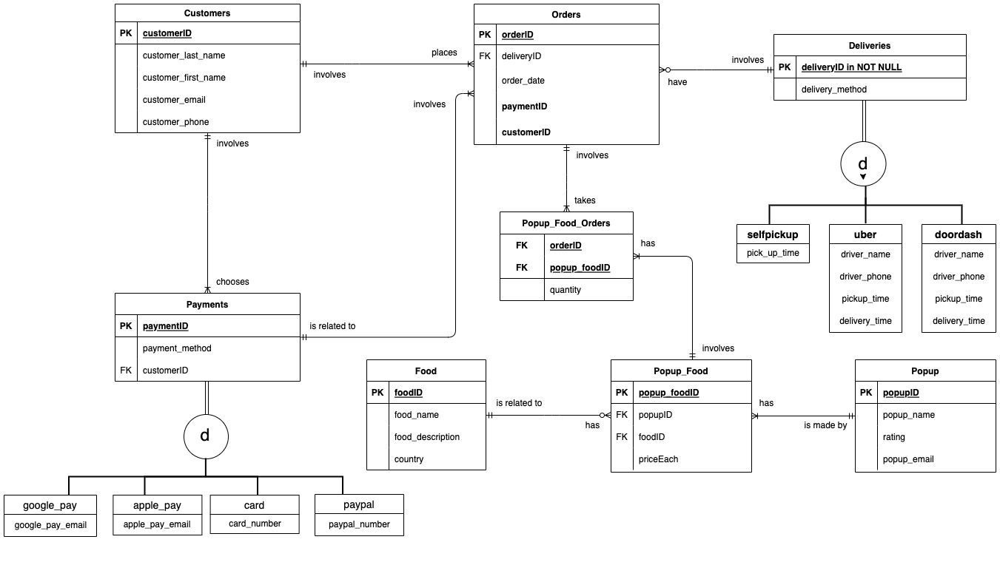

Food Pop-up Business Model
Skills: SQL, Logical Design, ER Diagram

Objectives: Design a database from scratch for a business model called Food Popup that connects Cal Poly students to local food popups in San Luis Obispo area.
Contents: The workflow of this project can be described as the following:
- Develop comprehensive business rules that inform the model
- Create definitions that define the entities for the entire database
- Design Enhanced Entity-Relationship (EER) diagram
- Create a logical design that explains a series logical relationships called entities and attributes
- Use SQL to create database, populate database
- Execute many SQL queries to answer potential business questions
Enhanced Entity-Relationship (EER) of Food Pop-up Business Database
Logical Design of Food Pop-up Business Database
Please refer to the report below for more details: